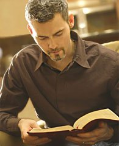

Свидетельства о существовании Бога
Кроме объективного доказательства существования Бога есть еще и субъективные доказательства, или, правильнее сказать, свидетельства о существовании Бога. Свидетельство - это показание человека, который пережил какое-то событие и теперь свидетельствует о том, что он пережил. Так вот, сегодня многие миллионы людей являются свидетелями существования Бога. Что я имею ввиду?
Как-то один атеист говорил о том, что Бога нет. Услышал это верующий и с удивлением отвечает ему: Как это Бога нет? Я только сегодня утром с Ним разговаривал.
Действительно, для по-настоящему верующих людей Бог является реальностью их жизни, они имеют прямое общение с Ним. Поэтому они убежденно свидетельствуют о том, что Бог существует и Он реален.
Более того, верующие люди свидетельствуют о том, что они не только общаются с Богом, но и о том, что Бог особенным образом влияет на их жизнь. Жизнь многих людей Бог радикальным образом изменяет. Разрушенные семьи восстанавливаются, люди освобождаются от алкогольной, наркотической и другого рода зависимостей. Изменяется их характер, их взаимоотношения с окружающими. Преображается их внутренний мир, человек находит умиротворение в душе, его жизнь становится по-настоящему счастливой и наполненной смыслом.
Конечно, эти свидетельства не являются объективным доказательством существования Бога, это субъективный опыт верующих людей. Но, тем не менее, это опыт миллионов людей во всем мире, и этот опыт доступен любому человеку, который по-настоящему захочет узнать Бога.
доктор юридических наук.
Джош Макдауэлл, почетный доктор юридических наук, раньше был убежденным атеистом. Но в своей книге Не просто плотник
он рассказывает о том, как его взгляды и его жизнь коренным образом изменились.
Все началось с того, что Джош познакомился с несколькими верующими людьми. Наблюдая за ними, он заметил, что в жизни этих людей есть что-то особенное, они были не такими как все. Эти люди, казалось, имели в себе какую-то особую уверенность и спокойствие, они выглядели счастливыми независимо ни от каких обстоятельств. Но удивительнее всего было то, что все это они объясняли присутствием в их жизни Иисуса Христа.
Для Джоша такое объяснение казалось просто глупостью. Он не понимал, как эти образованные и интеллигентные люди могли верить в такую бессмыслицу. Наконец, Джош решил серьезно изучить доводы за и против существования Бога для того, чтобы аргументировано показать своим новым знакомым нелепость их убеждений. Однако, исследование этого вопроса привело его к совершенно противоположному результату.
Джош ясно понял, что Бог действительно существует, и в этом не могло быть сомнения. Перед ним теперь стоял выбор: что с этим делать, как ему теперь относиться к Богу? С одной стороны, ему хотелось отбросить эту мысль и продолжать жить так, как он жил раньше. Но с другой стороны, он был здравомыслящим человеком, и понимал, что он не может просто сам себя обманывать, делая вид, что все может остаться по-прежнему.
Ведь если Бог действительно существует, то он может либо принять Его в свою жизнь, как это сделали те верующие, либо отвергнуть Его, сознательно пойдя против Бога. Но просто стараться не замечать Бога, жить так, как будто Его не существует, - это было бы просто самообманом.
После многих дней внутренней борьбы Джош наконец сдался и доверил свою жизнь Иисусу Христу. Дальше в своей книге он описывает то, как в течение следующего года Бог постепенно начал изменять его жизнь. Джош стал испытывать внутренний мир и радость, его характер и поступки серьезным образом преображались. Если раньше он легко выходил из себя, то теперь он стал замечать, что может сохранять спокойствие даже в самой напряженной обстановке.
Но самым большим свидетельством Божьего влияния на его жизнь стало то, что Джош смог простить своего отца, которого раньше ненавидел больше всех на свете. Его отец был страшным алкоголиком, доставившим множество страданий своим детям и доведший свою жену до смерти. Но Бог научил Джоша по-настоящему любить людей и прощать. И однажды он смог посмотреть своему отцу в глаза и искренно сказать ему: Папа, я тебя люблю.
Эти слова настолько потрясли отца-алкоголика, что через некоторое время он пришел и сказал: Я тоже хочу попробовать. Я хочу, чтобы Бог также изменил мою жизнь, как Он изменил твою.
Обычно человек меняется в течении нескольких лет или месяцев, но, по словам Джоша, его отец изменился сразу, у него на глазах. После того, как он вручил свою жизнь Иисусу Христу, он больше ни разу не выпил. Бог удивительным образом преобразил и этого человека.
Подобных историй существует огромное количество. И все они свидетельствуют не только о реальности существования Бога, но и том, что Бог удивительным образом влияет на человеческую жизнь. Некоторые из таких свидетельств вы можете посмотреть в разделе Видео на тему: Молитва, покаяние, обращение к Богу.
А в разделе Суть Христианства рассказывается о том, как вы тоже можете открыть свою жизнь для Бога и испытать Его удивительное преображение.
Если же вы хотите больше исследовать вопрос существования Бога или вопрос достоверности Библии, то вам в этом помогут статьи ниже.
Читать дальше:
Другие статьи в разделе Наука о Боге
:
- о Библии: